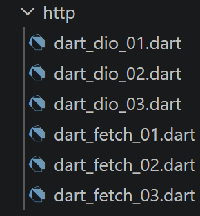

5. Las funciones HTTP en Dart

5.1. Elección de las herramientas HTTP
A diferencia de JavaScript/TypeScript, que ofrece una función [fetch] NATIVA (tanto en el navegador como en Node.js), Dart NO ofrece un cliente de alto nivel en su biblioteca estándar ([dart:io] expone solo un [HttpClient] de bajo nivel, engorroso de usar directamente). Dos paquetes externos cubren en conjunto exactamente el mismo terreno que [fetch] y [axios] en el curso de TypeScript:
- [package:http] (pub.dev/packages/http), mantenido por el propio equipo de Dart: una API simple y de bajo nivel, sin configuración global ni interceptores; el papel de [fetch].
- [package:dio] (pub.dev/packages/dio): configuración global ([baseUrl], [timeout]), interceptores, manejo de errores mejorado ([DioException.response]); el papel de [axios].
5.2. El servidor de cálculo de impuestos
Todos los scripts de este capítulo apuntan al servidor NestJS instalado en el capítulo anterior, en la dirección [http://localhost:3000/main.php]. Antes de probar los siguientes scripts, verifique que su servidor NestJS esté en ejecución. Para que funcione, la herramienta Laragon también debe estar en ejecución.
5.2.1. script [dart_fetch_01]
| // dart_fetch_01.dart
// Porta fetch-01.ts.
// Elección de herramientas HTTP en Dart: el paquete [http] (pub.dev/packages/http),
// mantenido por el propio equipo de Dart, hace el papel del [fetch] nativo de
// Node.js/el navegador - una API simple y de bajo nivel, sin
// configuración global ni interceptores (a diferencia del paquete [dio],
// que hace el papel de [axios] - ver dart_dio_01.dart).
import 'dart:convert';
import 'package:http/http.dart' as http;
// URL base del servidor de cálculo de impuestos (ver el capítulo
// "Installing a NestJS server")
const String baseUrl = 'http://localhost:3000/main.php';
// inicio de sesión
Future<dynamic> initSession() async {
// [difference with TypeScript] el paquete [http] no tiene opción
// [timeout] en la solicitud misma: limitamos el tiempo de espera
// envolviendo el Future con la extensión [.timeout(...)] de dart:async,
// que funciona con CUALQUIER Future (no solo con solicitudes
// HTTP) - un mecanismo más general que el AbortSignal.timeout() de fetch,
// específico del fetch nativo.
final uri = Uri.parse(baseUrl).replace(queryParameters: {
'action': 'init-session',
'type': 'json',
});
try {
// solicitud asíncrona - http.get() devuelve un Future<http.Response>
final stopwatch = Stopwatch()..start();
final response = await http.get(uri).timeout(const Duration(seconds: 2));
// [response] es la respuesta HTTP completa del servidor (encabezados
// HTTP + cuerpo) - la mostramos para ver su estructura
print("http response in Dart (duration=${stopwatch.elapsedMilliseconds}ms) : "
"statusCode=${response.statusCode}");
// podemos acceder a los encabezados HTTP
print("response headers=${response.headers}");
// [difference with TypeScript] a diferencia de fetch, donde response.json()
// es un método ASÍNCRONO separado (un nuevo Future), el cuerpo de
// http.Response ya está completamente disponible de forma
// SÍNCRONA (response.body, un String): http.get() ya esperó
// todo el cuerpo antes de devolver su resultado. Por lo tanto, jsonDecode()
// no es una operación asíncrona aquí.
final object = jsonDecode(response.body);
print("json response=$object, type=${object.runtimeType}");
return object;
} catch (error) {
// llegamos aquí porque el servidor respondió con un código de error, o
// porque el cliente http lanzó una excepción (red inaccesible,
// tiempo de espera excedido...)
print("fetch error in Dart=${error.runtimeType}, $error");
// relanzamos el error
rethrow;
}
}
// la función main ejecuta la función asíncrona [initSession]
Future<void> main() async {
try {
print("HTTP request to the server in progress "
"---------------------------------------------");
final response = await initSession();
print("success ---------------------------------------------");
print("response=$response ${response.runtimeType}");
} catch (error) {
print("error ---------------------------------------------");
print("error=$error");
}
}
|
Comentemos este código:
- línea 30: [http.get(uri).timeout(const Duration(seconds: 2))]: el paquete [http] no tiene una opción [timeout] en la propia solicitud; limitamos el tiempo de espera envolviendo el [Future] con el método [.timeout(...)] de dart:async, que funciona sobre CUALQUIER [Future], no solo sobre solicitudes HTTP.
- Línea 43: [jsonDecode(response.body)]: a diferencia de [fetch], donde [response.json()] es un método ASÍNCRONO aparte, el cuerpo de una [http.Response] ya está completamente disponible de forma SÍNCRONA ([response.body], un [String]): [http.get()] ya esperó el cuerpo completo antes de devolver su resultado.
El resultado de la ejecución es el siguiente:
| HTTP request to the server in progress ---------------------------------------------
http response in Dart (duration=73ms) : statusCode=200
response headers={x-powered-by: Express, connection: keep-alive, keep-alive: timeout=5, set-cookie: connect.sid=s%3AWxLD5aAAWVIL6pinZyP75L4COQi837LW.NmwJehFDFeCvZ0p6CKHV9ybz9xNUvndTB7TYlKgp7s4; Path=/; HttpOnly; SameSite=Lax, date: Sun, 20 Sep 2026 09:47:30 GMT, content-length: 84, etag: W/"54-sE02l73cr4dRIJSanYxwhuhm21c", content-type: application/json; charset=utf-8}
json response={action: init-session, status: 700, response: session started with type [json]}, type=_Map<String, dynamic>
success ---------------------------------------------
response={action: init-session, status: 700, response: session started with type [json]} _Map<String, dynamic>
|
5.2.2. script [dart_fetch_02]
| // dart_fetch_02.dart
// Porta fetch-02.ts: versión "concisa" de dart_fetch_01.dart, sin las
// visualizaciones intermedias.
import 'dart:convert';
import 'package:http/http.dart' as http;
const String baseUrl = 'http://localhost:3000/main.php';
// inicio de sesión
Future<dynamic> initSession() async {
final uri = Uri.parse(baseUrl).replace(queryParameters: {
'action': 'init-session',
'type': 'json',
});
final response = await http.get(uri).timeout(const Duration(seconds: 2));
// resultado recibido en JSON
return jsonDecode(response.body);
}
// la función main ejecuta la función asíncrona [initSession]
Future<void> main() async {
try {
print("HTTP request to the server in progress "
"---------------------------------------------");
final response = await initSession();
print("success ---------------------------------------------");
print("response=$response");
} catch (error) {
print("error ---------------------------------------------");
print("error=$error");
}
}
|
Comentemos este código:
- Una versión concisa de dart_fetch_01.dart, sin las salidas intermedias; la estructura sigue siendo la misma: construir el [Uri], llamar a [http.get], decodificar el JSON.
El resultado de la ejecución es el siguiente:
| HTTP request to the server in progress ---------------------------------------------
success ---------------------------------------------
response={action: init-session, status: 700, response: session started with type [json]}
|
5.2.3. script [dart_fetch_03]
| // dart_fetch_03.dart
// Porta fetch-03.ts: tiempo máximo de espera y cancelación manual de una
// solicitud HTTP.
import 'package:http/http.dart' as http;
// URL base del servidor de cálculo de impuestos (ver http/README, el
// servidor PHP histórico del curso original; aquí apuntamos directamente al
// servidor NestJS - ver el capítulo "Installing a NestJS server")
const String baseUrl = 'http://localhost:3000/main.php';
// ejemplo 1: solicitud con un tiempo máximo de espera, gracias a [.timeout(...)]
// (extensión de dart:async sobre cualquier Future - ver dart_fetch_01.dart)
Future<void> requestWithMaximumDelay() async {
print("--- request with .timeout() ---");
try {
final response = await http
.get(Uri.parse('$baseUrl?action=init-session&type=json'))
// pasados 2 segundos, [.timeout] completa el Future con un error
// de tipo [TimeoutException] - el equivalente en Dart del
// AbortSignal.timeout() de fetch
.timeout(const Duration(seconds: 2));
print("response = ${response.body}");
} catch (error) {
// si el servidor no existe (un caso probable en este ejercicio), o si
// se excede el tiempo de espera, [error] es una [TimeoutException] o una
// [SocketException]/[ClientException] según el caso
print("error.runtimeType = ${error.runtimeType}, message = $error");
}
}
// ejemplo 2: cancelación manual de una solicitud, por ejemplo porque
// el usuario cambió de opinión (p. ej.: vuelve a escribir en un campo
// de búsqueda).
//
// [WARNING, fundamental difference with TypeScript] el paquete [http] no tiene
// señal de cancelación POR SOLICITUD, como el AbortSignal de fetch: la
// única forma de cancelar es CERRAR EL CLIENTE (http.Client.close()) en
// su totalidad, lo que cancela TODAS las solicitudes en curso de este cliente - por
// lo tanto, hay que crear un cliente DEDICADO a la solicitud que se quiere poder cancelar
// individualmente, en lugar de un cliente compartido por toda la aplicación.
Future<void> manuallyCancellableRequest() async {
print("--- request cancelled manually ---");
final client = http.Client();
// programamos una cancelación "de negocio" después de 10 ms (en una
// aplicación real, esto sería por ejemplo un clic en un botón "cancelar")
Future.delayed(const Duration(milliseconds: 10), () {
print("manual cancellation triggered");
client.close();
});
try {
final response = await client.get(Uri.parse('$baseUrl?action=init-session&type=json'));
print("response = ${response.body}");
} catch (error) {
// cerrar el cliente durante una solicitud en curso la hace fallar con
// una [ClientException]
print("error.runtimeType = ${error.runtimeType}, message = $error");
}
}
Future<void> main() async {
await requestWithMaximumDelay();
await manuallyCancellableRequest();
}
|
Analicemos este código:
- Línea 21: [.timeout(const Duration(seconds: 2))] completa con error el [Future] con una [TimeoutException] cuando se supera el límite de tiempo; el equivalente en Dart de [AbortSignal.timeout()] para [fetch].
- Línea 35: [WARNING, key difference]: el paquete [http] NO tiene una señal de cancelación POR SOLICITUD como [AbortController] para [fetch]: la única forma de cancelar es CERRAR EL CLIENTE ([http.Client.close()]) por completo, lo que cancela TODAS las solicitudes pendientes de ese cliente; de ahí la necesidad de crear un cliente DEDICADO para la solicitud que se quiera poder cancelar individualmente.
El resultado de la ejecución es el siguiente:
| --- request with .timeout() ---
response = {"action":"init-session","status":700,"response":"session started with type [json]"}
--- request cancelled manually ---
response = {"action":"init-session","status":700,"response":"session started with type [json]"}
manual cancellation triggered
|
5.2.4. script [dart_dio_01]
| // dart_dio_01.dart
// Porta axios-01.ts y axios-02.ts.
// Elección de herramientas HTTP en Dart: el paquete [dio] (pub.dev/packages/dio)
// hace el papel de [axios] - una configuración global (baseUrl, timeout),
// interceptores, manejo de errores enriquecido (error.response, como
// axios): todo lo que el paquete [http], más cercano a fetch, deja al
// código que lo llama (ver dart_fetch_01.dart).
import 'package:dio/dio.dart';
// una instancia de Dio configurada de una vez por todas, reutilizada por todas
// las llamadas - exactamente el papel de "axios.defaults" en TypeScript
final Dio dio = Dio(BaseOptions(
baseUrl: 'http://localhost:3000/',
connectTimeout: const Duration(seconds: 2),
receiveTimeout: const Duration(seconds: 2),
));
// inicio de sesión
Future<dynamic> initSession({required String type}) async {
try {
// solicitud asíncrona - dio.get() acepta directamente
// queryParameters, como axios.request({params: ...})
final response = await dio.get('main.php', queryParameters: {
'action': 'init-session',
'type': type,
});
// la respuesta del servidor está en [response.data] (ya decodificada a
// Map/List por Dio si el Content-Type es JSON), exactamente como
// response.data en axios
return response.data;
} on DioException catch (error) {
// el parámetro [error] es una [DioException] - la mostramos para
// ver su estructura (equivalente del "console.log(axios error)"
// comentado en axios-01.ts)
if (error.response != null) {
// el servidor señaló un error en el estado HTTP pero también
// envió una respuesta: está en [error.response!.data],
// exactamente como [error.response.data] en axios
return error.response!.data;
} else {
// ninguna respuesta (red inaccesible, tiempo de espera excedido...) -
// relanzamos el error
rethrow;
}
}
}
Future<void> main() async {
try {
// 1.er intento, deliberadamente inválido (type='x' en lugar de 'json'),
// para observar cómo el servidor - y luego dio - señalan el error:
// el servidor responde de todos modos (con un estado de error de negocio), por lo que
// error.response.data efectivamente está lleno, como en axios-01.ts
print("HTTP request (invalid type) to the server in progress "
"---------------------------------------------");
final invalidResponse = await initSession(type: 'x');
print("response=$invalidResponse ${invalidResponse.runtimeType}");
// 2.º intento, corregido (type='json'), como axios-02.ts
print("HTTP request (corrected type) to the server in progress "
"---------------------------------------------");
final response = await initSession(type: 'json');
print("success ---------------------------------------------");
print("response=$response ${response.runtimeType}");
} catch (error) {
print("error ---------------------------------------------");
print("error=$error");
}
}
|
Analicemos este código:
- Líneas 12–15: [Dio(BaseOptions(baseUrl: ..., connectTimeout: ..., receiveTimeout: ...))]: una instancia de [Dio] configurada de una vez por todas y reutilizada en todas las llamadas; exactamente el papel de [axios.defaults] en TypeScript.
- [response.data]: la respuesta del servidor, que Dio ya DECODIFICÓ en [Map]/[List] si el [Content-Type] es JSON, exactamente como [response.data] en axios.
- Líneas 30–31: [on DioException catch (error) { if (error.response != null) ... }]: la misma distinción que [error.response] en Axios entre un error CON respuesta del servidor (estado de error de negocio) y un error SIN respuesta (red inaccesible, tiempo de espera agotado).
El resultado de la ejecución es el siguiente:
| HTTP request (invalid type) to the server in progress ---------------------------------------------
response={action: init-session, status: 703, response: invalid parameter type=[x]} _Map<String, dynamic>
HTTP request (corrected type) to the server in progress ---------------------------------------------
success ---------------------------------------------
response={action: init-session, status: 700, response: session started with type [json]} _Map<String, dynamic>
|
5.2.5. script [dart_dio_02]
| // dart_dio_02.dart
// Porta axios-03.ts: encadenamiento de dos solicitudes HTTP - init-session, luego
// authenticate-user (un POST con un cuerpo codificado como
// x-www-form-urlencoded).
import 'package:dio/dio.dart';
final Dio dio = Dio(BaseOptions(
baseUrl: 'http://localhost:3000/',
connectTimeout: const Duration(seconds: 2),
receiveTimeout: const Duration(seconds: 2),
));
Future<dynamic> initSession() async {
try {
final response = await dio.get('main.php', queryParameters: {
'action': 'init-session',
'type': 'json',
});
return response.data;
} on DioException catch (error) {
if (error.response != null) {
return error.response!.data;
}
rethrow;
}
}
Future<dynamic> authenticateUser(String user, String password) async {
try {
// solicitud POST con un cuerpo x-www-form-urlencoded - Dio codifica
// automáticamente un Map como x-www-form-urlencoded si el
// Content-Type se especifica en las [Options], exactamente como qs.stringify(...)
// + el encabezado manual de axios-03.ts
final response = await dio.post(
'main.php',
queryParameters: {'action': 'authenticate-user'},
data: {'user': user, 'password': password},
options: Options(contentType: Headers.formUrlEncodedContentType),
);
return response.data;
} on DioException catch (error) {
if (error.response != null) {
return error.response!.data;
}
rethrow;
}
}
// la función main ejecuta las funciones asíncronas una por una
Future<void> main() async {
try {
// init-session
print("init-session action in progress "
"---------------------------------------------");
final response1 = await initSession();
print("success ---------------------------------------------");
print("response=$response1");
// authenticate-user - [NOTE, as in the original TypeScript
// course] esta llamada parte de una nueva solicitud HTTP, SIN
// compartir automáticamente la cookie de sesión establecida por el servidor en
// el paso anterior (ni Dio ni axios lo hacen automáticamente del lado de
// Node/Dart): el seguimiento manual de la cookie de sesión es precisamente el
// tema de dart_dio_03.dart, que porta axios-04.ts.
print("authenticate-user action in progress "
"---------------------------------------------");
final response2 = await authenticateUser('admin', 'admin');
print("success ---------------------------------------------");
print("response=$response2");
} catch (error) {
print("error ---------------------------------------------");
print("error=$error");
}
}
|
Analicemos este código:
- línea 38: [Options(contentType: Headers.formUrlEncodedContentType)]: Dio codifica automáticamente en [x-www-form-urlencoded] el [Map] pasado a [data] en cuanto se especifica este [Content-Type]; el equivalente de [qs.stringify(...)] combinado con el encabezado manual de Axios.
- Esta llamada es una nueva solicitud HTTP que NO comparte automáticamente la cookie de sesión establecida por el servidor en el paso anterior; ni Dio ni axios lo hacen automáticamente del lado de Dart/Node: el seguimiento manual de cookies es el tema del siguiente script.
El resultado de la ejecución es el siguiente:
| init-session action in progress ---------------------------------------------
success ---------------------------------------------
response={action: init-session, status: 700, response: session started with type [json]}
authenticate-user action in progress ---------------------------------------------
success ---------------------------------------------
response={action: authenticate-user, status: 103, response: [no session in progress. Start with action [init-session]]}
|
5.2.6. script [dart_dio_03]
| // dart_dio_03.dart
// Porta axios-04.ts: seguimiento manual de la cookie de sesión entre dos solicitudes.
import 'package:dio/dio.dart';
final Dio dio = Dio(BaseOptions(
baseUrl: 'http://localhost:3000/',
connectTimeout: const Duration(seconds: 2),
receiveTimeout: const Duration(seconds: 2),
// desactivamos la validación por defecto del estado HTTP para poder
// inspeccionar nosotros mismos una respuesta de error (como error.response en
// axios), sin pasar sistemáticamente por un bloque catch
validateStatus: (_) => true,
));
// cookie de sesión
const String sessionCookieName = "connect.sid";
String sessionCookie = '';
Future<dynamic> getRemoteData(String path, {
required String method,
Map<String, dynamic>? queryParameters,
Object? data,
Options? options,
}) async {
// para la cookie de sesión - la añadimos nosotros mismos a los encabezados de
// cada solicitud, exactamente como axios-04.ts
final opts = (options ?? Options(method: method)).copyWith(
method: method,
headers: {
...?options?.headers,
'Cookie': sessionCookie,
},
);
// ejecución de la solicitud HTTP
final response = await dio.request(
path,
queryParameters: queryParameters,
data: data,
options: opts,
);
// recuperamos la cookie de sesión si existe - response.headers es un
// objeto [Headers] de Dio (no un simple Map como response.headers en
// axios); response.headers['set-cookie'] devuelve una List<String>?
final setCookie = response.headers['set-cookie'];
if (setCookie != null) {
// buscamos la cookie de sesión en esta lista
for (final header in setCookie) {
final result = RegExp('^($sessionCookieName.+?);').firstMatch(header);
if (result != null) {
// almacenamos la cookie de sesión
sessionCookie = result.group(1)!;
break;
}
}
}
// la respuesta del servidor está en [response.data]
return response.data;
}
Future<dynamic> initSession() {
return getRemoteData(
'main.php',
method: 'GET',
queryParameters: {'action': 'init-session', 'type': 'json'},
);
}
Future<dynamic> authenticateUser(String user, String password) {
return getRemoteData(
'main.php',
method: 'POST',
queryParameters: {'action': 'authenticate-user'},
data: {'user': user, 'password': password},
options: Options(contentType: Headers.formUrlEncodedContentType),
);
}
// la función main ejecuta las funciones asíncronas una por una
Future<void> main() async {
try {
print("init-session action in progress ----------------");
final response1 = await initSession();
print("success --------------------------");
print("response=$response1");
print("authenticate-user action in progress ---------");
final response2 = await authenticateUser('admin', 'admin');
print("success -------------------");
print("response=$response2");
} catch (error) {
print("error ------------------");
print("error=$error");
}
}
|
Analicemos este código:
- Línea 12: [validateStatus: (_) => true]: desactiva la validación predeterminada del estado HTTP, de modo que pueda inspeccionar usted mismo una respuesta de error sin tener que pasar siempre por un bloque [catch]; la misma elección que en axios-04.ts.
- [response.headers['set-cookie']] devuelve una [List<String>?]: a diferencia de [response.headers] en Axios (un simple objeto), [response.headers] de Dio es un objeto [Headers] dedicado, cuya indexación siempre devuelve una lista.
- Línea 48: [RegExp('^($sessionCookieName.+?);').firstMatch(header)]: la cookie de sesión se recupera y se almacena manualmente, y luego se reinserta en el encabezado [Cookie] de cada solicitud posterior; exactamente el mismo patrón que en axios-04.ts, adaptado a la API de Dio.
El resultado de la ejecución es el siguiente:
| init-session action in progress ----------------
success --------------------------
response={action: init-session, status: 700, response: session started with type [json]}
authenticate-user action in progress ---------
success -------------------
response={action: authenticate-user, status: 200, response: Authentication successful [admin, admin]}
|
5.2.7. Conclusión
[package:http] y [package:dio] cubren en conjunto todo el alcance de [fetch] y [axios]: una API de bajo nivel cercana al protocolo y una API rica en funcionalidades con configuración global y manejo de errores mejorado. Las diferencias específicas ([timeout] genérico por [Future] y no por solicitud, falta de cancelación individual, falta de gestión automática de cookies) se verán reflejadas, de forma concreta, en los clientes HTTP del capítulo siguiente.